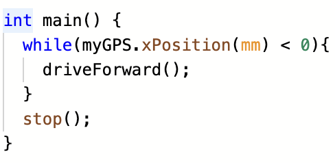
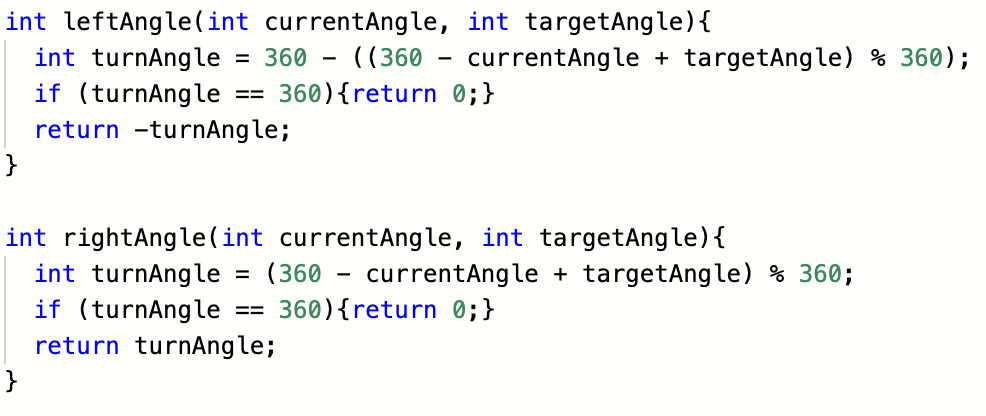
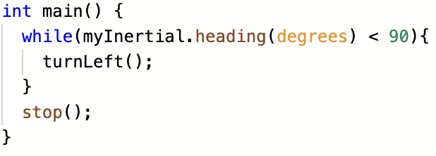
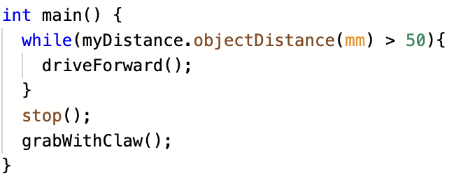

- By Joey Marcinowski
Introduction To VEX Sensors
Using Robotics sensors can be daunting to new members, but it does not need to be.
This website is intended to be used as a guide and not a source of software. When you get a idea, try it!
You'll learn far more by testing the limits of your own code than you will from this website.
Resources
The VEX C++ API is a great place to find information on VEX programming.
A list of the robotics sensors can be found on the vex products page.
What Sensors Are There?
There are a variety of sensors VEX offers.
Below are the ones I believe are most useful.
| Sensor | Details |
|---|---|
| GPS Sensor | |
| Inertial Sensor | |
| Distance Sensor | |
| Rotation Sensor | |
| Shaft Encoder |
GPS Sensor
The GPS sensor can get the x, y, heading, and other other information about the position using GPS strips.
It's much easier to get up and running instead of odometry.
Examples of use:
The VEX field in terms of GPS coordinates looks like this:
kb.vex.com article
By using the object getter methods, the robot can respond to its location.
In this code, the robot would drive forward while xPosition(mm) < 0 so the robot would stop
on the y-axis.
This can be applied for the x-axis or for any coordinate position.
By applying both of these, a robot could theoretically drive to any code
x, y position by first driving to the
x position and turning 90 degrees.
Additionally, using trigonometry a robot could autonomously navigate to any location.
Inertial Sensor
The inertial sensor can get the heading, rotation, and acceleration of the robot among other things.
The most useful application is doing accurate turns in autonomous.
This is actually a really annoying task, since the inertial sensor records angles 0-360 degrees.
If we wanted turn from 45 to 315 degrees, the robot must first compute the distance turning to the left and right and choose What direction is better.
Additionally, since angles roll over from 360 to 0 degrees, simple subtraction will not cut it.
Here is a simple algorithm we developed to compute the left and right turn angles.
current angle can be substituted with either a GPS or Inertial heading and target heading is what you want.
Both of these return the amount of degrees the robot needs to turn to the left/right respectively to get to the target.
Here is an example of the code:
This code would turn the robot 90 degrees, but would have bugs when turning to 270 degrees.
For that reason the algorithms above need to be applied, but I'll leave that as an exercise to the viewer.
Additionally, it is worthwhile to use a PID Controller to do this.
Distance Sensor
The distance sensor can get the distance away from an object.
Programming it is quite straight forward.
Here is an example:
In this code, the robot continuously drives forward until it is close enough to an object, in which case, it would stop and grab the object.